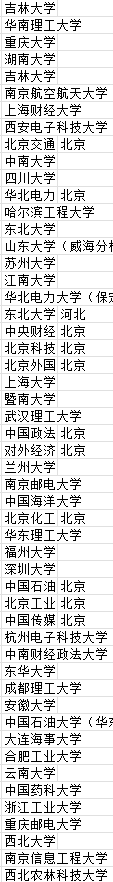

听羽 🏳️⚧️
@tingxinzhongyu
@RSenn77 建议优先985 专业等进去还能换

染染
@RSenn77
成绩比预期高了好多
大概能上这些学校，去末流985还是前排211
想去上海和深圳以及附近
专业可以接受的有 计算机 电子 自动化 仪器 材料 化工 心理学 经济 金融
希望能自由探索方向，别把大学上成职业技术学院出来只能找对口
以后想出国读研或者直接拿工签
在上大学和工作了的推友能给些建议吗🥺 https://t.co/jn1YptDv79 https://t.co/RmucNA8E7g